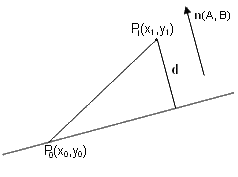
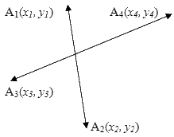

Геометрия: отношения между объектами
Расстояние и площадь
a) Расстояние между двумя точками с координатами $(x_1,y_1)$ и $(x_2,y_2)$ вычисляется по формуле $d = \sqrt{(x_1-x_2)^2+(y_1-y_2)^2}$

Рис. 5
b) Расстояние $d$ от точки $P_1(X_1,Y_1)$ до прямой $Ax + By + C = 0$ вычисляется следующим образом.
Предположим, что выбрана точка $P_0(x_0,y_0)$, лежащая на прямой (рисунок 5), тогда $d$ есть проекция отрезка ${P_1}{P_0}$ на вектор $n(A,B)$. Используя формулы скалярного произведения и свойство $A{x_0}+B{y_0}+C=0$, получим: $d=\frac{|A(x_1-x_0)+B(y_1-y_0)|}{\sqrt{A^2+B^2}}$, или окончательно $d=\frac{|A{x_1}+B{y_1}+C|}{\sqrt{A^2+B^2}}$,
$\frac{a{x_p}+b{y_p}+c}{a^2+b^2}={-{k}}$$p=\frac{|a{x_p}+b{y_p}+c|\sqrt{a^2+b^2}}{a^2+b^2}=\frac{|a{x_p}+b{y_p}+c|}{\sqrt{a^2+b^2}}$
Альтернативный путь решения (предложен Максимом Кочановым)
Генерируем 2 случайные точки на прямой.
По формуле Герона площадь треугольника: $S=\sqrt{p(p-a)(p-b)(p-c)}$, где $p = \frac{a + b + c}2$ - полупериметр.
С другой стороны $S = \frac{HD}{2}$, где $H$ - высота треугольника (расстояние до точки), $D$ - основание треугольника.
причем, если убрать знак модуля из числителя, то получится ориентированное расстояние, указывающее на расположение точки относительно прямой.
c) Вычисление расстояния $d$ от точки (X1, Y1) до луча или отрезка отличается от вышеописанного, так как основание перпендикуляра, опущенного из точки на продолженную прямую, может не лежать на луче/отрезке. В этом случае кратчайшим расстоянием будет дистанция от точки до начальной точки луча или одной из начальных точек отрезка.
d) Площадь треугольника со сторонами $a, b, c$ по формуле Герона $S=\sqrt{p(p-a)(p-b)(p-c)}$, где $p$ – полупериметр треугольника $p = \frac{a + b + c}2$.
e) Площадь треугольника со сторонами a, b и углом между ними φ вычисляется как половина площади параллелограмма, построенного на этих сторонах, с использованием формулы векторного произведения.
SD = |[a × b]| / 2 = |(x1· Y2 - x2·Y1)| / 2.
f) Площадь произвольного многоугольника вычисляется как сумма ориентированных площадей треугольников, у которых одна вершина – начало координат, а две другие – пары вершин многоугольника (последовательные концы сторон).
$S=\displaystyle\sum\limits_{i=1}^N{S_i}$, где $S_i$ – площадь $i$-го треугольника, $N$ – количество вершин многоугольника.
Площади треугольников вычисляются по следующим формулам:
$S_i=({x_i}{y_{i+1}}-x_{i+1}y_i)/2$, $i=1,2,...,{N-1}$,
$S_N=({x_N}{y_1}-{x_1}{y_N})/2$,
Если вершины нумеровать с 0 и индекс вершины брать по модулю $N$, то эти две формулы объединяются в одну.
Реализация на Python
# Площадь многоугольника по формуле шнурка (удвоенная): O(N)
Point = tuple[int, int]
def shoelace_area2(polygon: list[Point]) -> int:
"""Удвоенная площадь: сумма ориентированных площадей треугольников (начало, P_i, P_i+1)."""
total = 0
for (x1, y1), (x2, y2) in zip(polygon, polygon[1:] + polygon[:1]):
total += x1 * y2 - x2 * y1
return abs(total)
if __name__ == "__main__":
# Квадрат 4x4 и невыпуклый многоугольник в форме буквы "L"
square = [(0, 0), (4, 0), (4, 4), (0, 4)]
letter_l = [(0, 0), (4, 0), (4, 1), (1, 1), (1, 4), (0, 4)]
print("Квадрат: 2S =", shoelace_area2(square))
print("Буква L: 2S =", shoelace_area2(letter_l))
Реализация на Rust
// Площадь многоугольника по формуле шнурка (удвоенная): O(N)
type Point = (i64, i64);
/// Удвоенная площадь: сумма ориентированных площадей треугольников (начало, P_i, P_i+1).
pub fn shoelace_area2(polygon: &[Point]) -> i64 {
let n = polygon.len();
let mut total: i64 = 0;
for i in 0..n {
let (x1, y1) = polygon[i];
let (x2, y2) = polygon[(i + 1) % n];
total += x1 * y2 - x2 * y1;
}
total.abs()
}
fn main() {
// Квадрат 4x4 и невыпуклый многоугольник в форме буквы "L"
let square = [(0, 0), (4, 0), (4, 4), (0, 4)];
let letter_l = [(0, 0), (4, 0), (4, 1), (1, 1), (1, 4), (0, 4)];
println!("Квадрат: 2S = {}", shoelace_area2(&square));
println!("Буква L: 2S = {}", shoelace_area2(&letter_l));
}
Реализация на C++
// Площадь многоугольника по формуле шнурка (удвоенная): O(N)
#include <cstddef>
#include <cstdio>
#include <cstdlib>
#include <utility>
#include <vector>
using Point = std::pair<long long, long long>;
// Удвоенная площадь: сумма ориентированных площадей треугольников (начало, P_i, P_i+1).
long long shoelaceArea2(const std::vector<Point>& polygon) {
long long total = 0;
const std::size_t n = polygon.size();
for (std::size_t i = 0; i < n; ++i) {
const Point& a = polygon[i];
const Point& b = polygon[(i + 1) % n];
total += a.first * b.second - b.first * a.second;
}
return std::llabs(total);
}
int main() {
// Квадрат 4x4 и невыпуклый многоугольник в форме буквы "L"
const std::vector<Point> square = {{0, 0}, {4, 0}, {4, 4}, {0, 4}};
const std::vector<Point> letterL = {{0, 0}, {4, 0}, {4, 1}, {1, 1}, {1, 4}, {0, 4}};
std::printf("Квадрат: 2S = %lld\n", shoelaceArea2(square));
std::printf("Буква L: 2S = %lld\n", shoelaceArea2(letterL));
return 0;
}
Параллельность и перпендикулярность
Для того чтобы определить, принадлежит ли точка прямой, необходимо подставить координаты точки в уравнение прямой. При определении принадлежности точки отрезку добавляется проверка на то, лежат ли координаты точки между координатами начала и конца отрезка.
Определение того, пересекаются ли две прямые, заданные уравнениями
A1x + B1y + C1
= 0 и A2x
+ B2y + C2 = 0, сводится к
следующему:
- вычисляется определитель второго порядка Δ = A1 B2 – A2 B1;
- проверяется, равен ли он нулю;
- если равен, то делается вывод о параллельности прямых;
- если не равен, то прямые пересекаются;
- координаты точки пересечения прямых находятся по следующим
формулам
Крамера:
x = -Δx/Δ и у = - Δу/Δ, где Δx = c1 B2 – C2 B1, Δу = A1 C2 – A2 c1; - если A2 = B1 и B2 = - A1, то прямые перпендикулярны.
Реализация на Python
# Пересечение прямых A1x + B1y + C1 = 0 и A2x + B2y + C2 = 0 по формулам Крамера: O(1)
Line = tuple[float, float, float] # коэффициенты (A, B, C)
def intersect_lines(first: Line, second: Line) -> tuple[float, float] | None:
"""Точка пересечения или None, если определитель равен нулю (прямые параллельны или совпадают)."""
a1, b1, c1 = first
a2, b2, c2 = second
det = a1 * b2 - a2 * b1
if det == 0:
return None
x = -(c1 * b2 - c2 * b1) / det
y = -(a1 * c2 - a2 * c1) / det
return x, y
if __name__ == "__main__":
# Прямые x + y - 3 = 0 и x - y - 1 = 0 пересекаются в точке (2, 1)
print("Пересечение:", intersect_lines((1, 1, -3), (1, -1, -1)))
# Прямые x + y = 0 и x + y - 5 = 0 параллельны
print("Параллельные:", intersect_lines((1, 1, 0), (1, 1, -5)))
Реализация на Rust
// Пересечение прямых A1x + B1y + C1 = 0 и A2x + B2y + C2 = 0 по формулам Крамера: O(1)
/// Прямая задана коэффициентами (A, B, C) уравнения Ax + By + C = 0.
#[derive(Clone, Copy)]
pub struct Line {
pub a: f64,
pub b: f64,
pub c: f64,
}
/// Точка пересечения или None, если определитель равен нулю (прямые параллельны или совпадают).
pub fn intersect_lines(first: Line, second: Line) -> Option<(f64, f64)> {
let det = first.a * second.b - second.a * first.b;
if det == 0.0 {
return None;
}
let dx = first.c * second.b - second.c * first.b;
let dy = first.a * second.c - second.a * first.c;
Some((-dx / det, -dy / det))
}
fn main() {
// Прямые x + y - 3 = 0 и x - y - 1 = 0 пересекаются в точке (2, 1)
let first = Line { a: 1.0, b: 1.0, c: -3.0 };
let second = Line { a: 1.0, b: -1.0, c: -1.0 };
if let Some((x, y)) = intersect_lines(first, second) {
println!("Пересечение: ({:.1}, {:.1})", x, y);
}
// Прямые x + y = 0 и x + y - 5 = 0 параллельны
let zero = Line { a: 1.0, b: 1.0, c: 0.0 };
let shifted = Line { a: 1.0, b: 1.0, c: -5.0 };
let answer = if intersect_lines(zero, shifted).is_some() { "есть точка" } else { "нет точки" };
println!("Параллельные: {}", answer);
}
Реализация на C++
// Пересечение прямых A1x + B1y + C1 = 0 и A2x + B2y + C2 = 0 по формулам Крамера: O(1)
#include <cstdio>
#include <optional>
struct Line {
double a, b, c; // коэффициенты уравнения Ax + By + C = 0
};
struct Point {
double x, y;
};
// Точка пересечения или пустой результат, если определитель равен нулю (прямые параллельны или совпадают)
std::optional<Point> intersectLines(const Line& first, const Line& second) {
const double det = first.a * second.b - second.a * first.b;
if (det == 0) return std::nullopt;
const double dx = first.c * second.b - second.c * first.b;
const double dy = first.a * second.c - second.a * first.c;
return Point{-dx / det, -dy / det};
}
int main() {
// Прямые x + y - 3 = 0 и x - y - 1 = 0 пересекаются в точке (2, 1)
const std::optional<Point> p = intersectLines({1, 1, -3}, {1, -1, -1});
if (p) std::printf("Пересечение: (%.1f, %.1f)\n", p->x, p->y);
// Прямые x + y = 0 и x + y - 5 = 0 параллельны
const std::optional<Point> q = intersectLines({1, 1, 0}, {1, 1, -5});
std::printf("Параллельные: %s\n", q ? "есть точка" : "нет точки");
return 0;
}

Рис. 6
Взаимное расположение двух отрезков можно проверить с помощью четырех векторных произведений (рис. 6).
V1 = (x3 - x1)(y4 – y1) – (x4 – x1)(y3 – y1)
V2 = (x3 - x2)(y4 – y2) – (x4 – x2)(y3 – y2)
V3 = (x1 - x3)(y2 – y3) – (x2 – x3)(y1 – y3)
V4 = (x1 - x4)(y2 – y4) – (x2 – x4)(y1 – y4)
Отрезки пересекаются, если одновременно выполняются два условия: V1V2<0 (векторные произведения V1 и V2 разных знаков), V3V4<0 (векторные произведения V3 и V4 разных знаков). Если V1V2>0 или V3V4>0, то отрезки не пересекаются.
Дополнительные проверки используются, если точка пересечения лежит на одном из отрезков.
Реализация на Python
# Пересечение отрезков по векторным произведениям: O(1)
Point = tuple[int, int]
def cross(origin: Point, a: Point, b: Point) -> int:
"""Векторное произведение (a - origin) x (b - origin): > 0 - поворот влево."""
return (a[0] - origin[0]) * (b[1] - origin[1]) - (a[1] - origin[1]) * (b[0] - origin[0])
def on_segment(a: Point, b: Point, p: Point) -> bool:
"""Точка p, лежащая на прямой ab, принадлежит отрезку ab (проверка по рамке)."""
return min(a[0], b[0]) <= p[0] <= max(a[0], b[0]) and min(a[1], b[1]) <= p[1] <= max(a[1], b[1])
def segments_intersect(p1: Point, p2: Point, p3: Point, p4: Point) -> bool:
"""Пересекаются ли отрезки p1p2 и p3p4, включая касание и наложение."""
d1 = cross(p3, p4, p1)
d2 = cross(p3, p4, p2)
d3 = cross(p1, p2, p3)
d4 = cross(p1, p2, p4)
# Общий случай: концы каждого отрезка лежат по разные стороны прямой другого
if d1 * d2 < 0 and d3 * d4 < 0:
return True
# Частный случай: конец одного отрезка лежит на другом
return (
(d1 == 0 and on_segment(p3, p4, p1))
or (d2 == 0 and on_segment(p3, p4, p2))
or (d3 == 0 and on_segment(p1, p2, p3))
or (d4 == 0 and on_segment(p1, p2, p4))
)
if __name__ == "__main__":
print("Крест:", segments_intersect((0, 0), (2, 2), (0, 2), (2, 0)))
print("Касание концом:", segments_intersect((0, 0), (2, 0), (1, 0), (1, 2)))
print("Наложение на прямой:", segments_intersect((0, 0), (3, 0), (2, 0), (5, 0)))
print("Параллельные:", segments_intersect((0, 0), (2, 0), (0, 1), (2, 1)))
Реализация на Rust
// Пересечение отрезков по векторным произведениям: O(1)
type Point = (i64, i64);
/// Векторное произведение (a - o) x (b - o): > 0 - поворот влево.
fn cross(o: Point, a: Point, b: Point) -> i64 {
(a.0 - o.0) * (b.1 - o.1) - (a.1 - o.1) * (b.0 - o.0)
}
/// Точка p, лежащая на прямой ab, принадлежит отрезку ab (проверка по рамке).
fn on_segment(a: Point, b: Point, p: Point) -> bool {
a.0.min(b.0) <= p.0 && p.0 <= a.0.max(b.0) && a.1.min(b.1) <= p.1 && p.1 <= a.1.max(b.1)
}
/// Пересекаются ли отрезки p1p2 и p3p4, включая касание и наложение.
pub fn segments_intersect(p1: Point, p2: Point, p3: Point, p4: Point) -> bool {
let d1 = cross(p3, p4, p1);
let d2 = cross(p3, p4, p2);
let d3 = cross(p1, p2, p3);
let d4 = cross(p1, p2, p4);
// Общий случай: концы каждого отрезка лежат по разные стороны прямой другого
if d1.signum() * d2.signum() < 0 && d3.signum() * d4.signum() < 0 {
return true;
}
// Частный случай: конец одного отрезка лежит на другом
(d1 == 0 && on_segment(p3, p4, p1))
|| (d2 == 0 && on_segment(p3, p4, p2))
|| (d3 == 0 && on_segment(p1, p2, p3))
|| (d4 == 0 && on_segment(p1, p2, p4))
}
fn main() {
println!("Крест: {}", segments_intersect((0, 0), (2, 2), (0, 2), (2, 0)));
println!("Касание концом: {}", segments_intersect((0, 0), (2, 0), (1, 0), (1, 2)));
println!("Наложение на прямой: {}", segments_intersect((0, 0), (3, 0), (2, 0), (5, 0)));
println!("Параллельные: {}", segments_intersect((0, 0), (2, 0), (0, 1), (2, 1)));
}
Реализация на C++
// Пересечение отрезков по векторным произведениям: O(1)
#include <algorithm>
#include <cstdio>
#include <utility>
using Point = std::pair<long long, long long>;
// Векторное произведение (a - o) x (b - o): > 0 - поворот влево.
long long cross(Point o, Point a, Point b) {
return (a.first - o.first) * (b.second - o.second) - (a.second - o.second) * (b.first - o.first);
}
int sign(long long v) { return (v > 0) - (v < 0); }
// Точка p, лежащая на прямой ab, принадлежит отрезку ab (проверка по рамке).
bool onSegment(Point a, Point b, Point p) {
return std::min(a.first, b.first) <= p.first && p.first <= std::max(a.first, b.first) &&
std::min(a.second, b.second) <= p.second && p.second <= std::max(a.second, b.second);
}
// Пересекаются ли отрезки p1p2 и p3p4, включая касание и наложение.
bool segmentsIntersect(Point p1, Point p2, Point p3, Point p4) {
long long d1 = cross(p3, p4, p1);
long long d2 = cross(p3, p4, p2);
long long d3 = cross(p1, p2, p3);
long long d4 = cross(p1, p2, p4);
// Общий случай: концы каждого отрезка лежат по разные стороны прямой другого
if (sign(d1) * sign(d2) < 0 && sign(d3) * sign(d4) < 0) return true;
// Частный случай: конец одного отрезка лежит на другом
return (d1 == 0 && onSegment(p3, p4, p1)) || (d2 == 0 && onSegment(p3, p4, p2)) ||
(d3 == 0 && onSegment(p1, p2, p3)) || (d4 == 0 && onSegment(p1, p2, p4));
}
int main() {
std::printf("Крест: %s\n", segmentsIntersect({0, 0}, {2, 2}, {0, 2}, {2, 0}) ? "да" : "нет");
std::printf("Касание концом: %s\n", segmentsIntersect({0, 0}, {2, 0}, {1, 0}, {1, 2}) ? "да" : "нет");
std::printf("Наложение на прямой: %s\n", segmentsIntersect({0, 0}, {3, 0}, {2, 0}, {5, 0}) ? "да" : "нет");
std::printf("Параллельные: %s\n", segmentsIntersect({0, 0}, {2, 0}, {0, 1}, {2, 1}) ? "да" : "нет");
return 0;
}
4.2.3. Внутри и снаружи
Чтобы определить, находится ли точка внутри или снаружи многоугольника, необходимо знать, является ли многоугольник выпуклым или нет.
Для выпуклого N-угольника существует несколько способов определения принадлежности точки многоугольнику:
1) Вычислить сумму площадей треугольников, образованных смежными сторонами многоугольника и заданной точкой, используя формулу Герона. Сравнить с площадью многоугольника, вычисленной по векторному произведению как в пункте 4.2.1. Если площади равны (или отличаются не более чем на заданную малую величину), то точка внутри многоугольника.
2) Проверить, если вершины и данная точка лежат в одной полуплоскости от каждой стороны N-угольника, то точка внутренняя. В уравнение прямой через каждые две соседние вершины xi,yi и Xi+1,yi+1, подставляем координаты данной точки X,Y и по очереди координаты всех остальных вершин. Другими словами, необходимо, чтобы полученные значения функции F(xi,yi,Xi+1,y i+1,X,y) = (Xi+1- Xi)(y-Yi)-(X- Xi)(yi+1-Yi) при разных xi, yi, Xi+1, yi+1 (i = 1, …, N-1) были одного знака, тогда точка внутри многоугольника.
3) Составить N векторных произведений (один вектор — сторона многоугольника, а второй вектор — из точки до одной из вершин на стороне) и проверить, все ли они одного знака (если одного, то точка внутри).
Для произвольного N-угольника все эти способы работают не всегда. Необходимо использовать следующие способы:
4) Проверить, чему равна сумма углов вокруг исследуемой точки, то есть сумма углов, под которыми видна каждая сторона многоугольника из искомой точки. Причем углы следует брать со знаком, соответствующим последовательному обходу сторон многоугольника. Знак угла определяется векторным произведением радиус-векторов от заданной точки до вершин многоугольника, определяющих сторону. Величина угла определяется по формуле арккосинуса для найденного из скалярного произведения косинуса угла. Если точка внутренняя, то сумма углов по модулю — 2p, если наружная, то ноль. В программе достаточно произвести сравнение абсолютной величины суммарного угла с p (больше либо меньше π).
Реализация на Python
# Принадлежность точки многоугольнику, метод суммы углов: O(N) по времени, O(1) по памяти
import math
Point = tuple[float, float]
def angle_sum_inside(point: Point, polygon: list[Point]) -> bool:
"""Точка внутри, если сумма ориентированных углов, под которыми видны стороны, по модулю больше pi."""
px, py = point
total = 0.0
for (x1, y1), (x2, y2) in zip(polygon, polygon[1:] + polygon[:1]):
ax, ay = x1 - px, y1 - py
bx, by = x2 - px, y2 - py
# Угол от вектора a к вектору b: знак дает векторное произведение, величина - скалярное
total += math.atan2(ax * by - ay * bx, ax * bx + ay * by)
return abs(total) > math.pi
if __name__ == "__main__":
# Невыпуклый многоугольник в форме буквы "L"
shape = [(0, 0), (4, 0), (4, 1), (1, 1), (1, 4), (0, 4)]
for point in [(0.5, 0.5), (2, 2), (0.5, 3), (3, 0.5)]:
print(point, "внутри" if angle_sum_inside(point, shape) else "снаружи")
Реализация на Rust
// Принадлежность точки многоугольнику, метод суммы углов: O(N) по времени, O(1) по памяти
type Point = (f64, f64);
/// Точка внутри, если сумма ориентированных углов, под которыми видны стороны, по модулю больше pi.
pub fn angle_sum_inside(point: Point, polygon: &[Point]) -> bool {
let (px, py) = point;
let n = polygon.len();
let mut total: f64 = 0.0;
for i in 0..n {
let (x1, y1) = polygon[i];
let (x2, y2) = polygon[(i + 1) % n];
let (ax, ay) = (x1 - px, y1 - py);
let (bx, by) = (x2 - px, y2 - py);
// Угол от вектора a к вектору b: знак дает векторное произведение, величина - скалярное
total += (ax * by - ay * bx).atan2(ax * bx + ay * by);
}
total.abs() > std::f64::consts::PI
}
fn main() {
// Невыпуклый многоугольник в форме буквы "L"
let shape = [(0.0, 0.0), (4.0, 0.0), (4.0, 1.0), (1.0, 1.0), (1.0, 4.0), (0.0, 4.0)];
for point in [(0.5, 0.5), (2.0, 2.0), (0.5, 3.0), (3.0, 0.5)] {
let place = if angle_sum_inside(point, &shape) { "внутри" } else { "снаружи" };
println!("({:.1}, {:.1}) {}", point.0, point.1, place);
}
}
Реализация на C++
// Принадлежность точки многоугольнику, метод суммы углов: O(N) по времени, O(1) по памяти
#include <cmath>
#include <cstddef>
#include <cstdio>
#include <vector>
struct Point {
double x, y;
};
// Точка внутри, если сумма ориентированных углов, под которыми видны стороны, по модулю больше pi
bool angleSumInside(Point p, const std::vector<Point>& polygon) {
const double pi = std::acos(-1.0);
double total = 0.0;
const std::size_t n = polygon.size();
for (std::size_t i = 0; i < n; ++i) {
const Point& a = polygon[i];
const Point& b = polygon[(i + 1) % n];
const double ax = a.x - p.x, ay = a.y - p.y;
const double bx = b.x - p.x, by = b.y - p.y;
// Угол от вектора a к вектору b: знак дает векторное произведение, величина - скалярное
total += std::atan2(ax * by - ay * bx, ax * bx + ay * by);
}
return std::fabs(total) > pi;
}
int main() {
// Невыпуклый многоугольник в форме буквы "L"
const std::vector<Point> shape = {{0, 0}, {4, 0}, {4, 1}, {1, 1}, {1, 4}, {0, 4}};
const std::vector<Point> tests = {{0.5, 0.5}, {2, 2}, {0.5, 3}, {3, 0.5}};
for (const Point& t : tests) {
std::printf("(%.1f, %.1f) %s\n", t.x, t.y, angleSumInside(t, shape) ? "внутри" : "снаружи");
}
return 0;
}
5) Провести через точку произвольную прямую. Если она не пересекает ни одну из сторон многоугольника, то точка лежит снаружи. Если пересечения есть, то определить количество пересечений луча, выходящего из данной точки в любую сторону, со сторонами многоугольника. Точка внутри, если количество пересечений нечетно.
Реализация на Python
# Принадлежность точки многоугольнику, метод луча (чет-нечет): O(N)
Point = tuple[float, float]
def point_in_polygon(point: Point, polygon: list[Point]) -> bool:
"""Точка внутри, если горизонтальный луч из нее пересекает границу нечетное число раз."""
x, y = point
inside = False
for (x1, y1), (x2, y2) in zip(polygon, polygon[1:] + polygon[:1]):
# Ребро учитываем, только если его концы лежат по разные стороны от прямой y
if (y1 > y) == (y2 > y):
continue
# Абсцисса точки пересечения ребра с лучом
x_cross = x1 + (x2 - x1) * (y - y1) / (y2 - y1)
if x < x_cross:
inside = not inside
return inside
if __name__ == "__main__":
# Невыпуклый многоугольник в форме буквы "L"
shape = [(0, 0), (4, 0), (4, 1), (1, 1), (1, 4), (0, 4)]
for point in [(0.5, 0.5), (2, 2), (0.5, 3), (3, 0.5)]:
print(point, "внутри" if point_in_polygon(point, shape) else "снаружи")
Реализация на Rust
// Принадлежность точки многоугольнику, метод луча (чет-нечет): O(N)
type Point = (f64, f64);
/// Точка внутри, если горизонтальный луч из нее пересекает границу нечетное число раз.
pub fn point_in_polygon(point: Point, polygon: &[Point]) -> bool {
let (px, py) = point;
let n = polygon.len();
let mut inside = false;
for i in 0..n {
let (ax, ay) = polygon[i];
let (bx, by) = polygon[(i + n - 1) % n];
// Ребро учитываем, только если его концы лежат по разные стороны от прямой y
if (ay > py) == (by > py) {
continue;
}
// Абсцисса точки пересечения ребра с лучом
let x_cross = ax + (bx - ax) * (py - ay) / (by - ay);
if px < x_cross {
inside = !inside;
}
}
inside
}
fn main() {
// Невыпуклый многоугольник в форме буквы "L"
let shape = [(0.0, 0.0), (4.0, 0.0), (4.0, 1.0), (1.0, 1.0), (1.0, 4.0), (0.0, 4.0)];
for point in [(0.5, 0.5), (2.0, 2.0), (0.5, 3.0), (3.0, 0.5)] {
let place = if point_in_polygon(point, &shape) { "внутри" } else { "снаружи" };
println!("({:.1}, {:.1}) {}", point.0, point.1, place);
}
}
Реализация на C++
// Принадлежность точки многоугольнику, метод луча (чет-нечет): O(N)
#include <cstddef>
#include <cstdio>
#include <vector>
struct Point {
double x, y;
};
// Точка внутри, если горизонтальный луч из нее пересекает границу нечетное число раз.
bool pointInPolygon(Point p, const std::vector<Point>& polygon) {
bool inside = false;
const std::size_t n = polygon.size();
for (std::size_t i = 0; i < n; ++i) {
const Point& a = polygon[i];
const Point& b = polygon[(i + n - 1) % n];
// Ребро учитываем, только если его концы лежат по разные стороны от прямой y
if ((a.y > p.y) == (b.y > p.y)) continue;
// Абсцисса точки пересечения ребра с лучом
double xCross = a.x + (b.x - a.x) * (p.y - a.y) / (b.y - a.y);
if (p.x < xCross) inside = !inside;
}
return inside;
}
int main() {
// Невыпуклый многоугольник в форме буквы "L"
const std::vector<Point> shape = {{0, 0}, {4, 0}, {4, 1}, {1, 1}, {1, 4}, {0, 4}};
const std::vector<Point> tests = {{0.5, 0.5}, {2, 2}, {0.5, 3}, {3, 0.5}};
for (const Point& t : tests) {
std::printf("(%.1f, %.1f) %s\n", t.x, t.y, pointInPolygon(t, shape) ? "внутри" : "снаружи");
}
return 0;
}
Площадь многоугольника
$S = (x_1 - x_0) (y_2 - y_0) - (y_1 - y_0) (x_2 - x_0)$ - ориентированная площадь